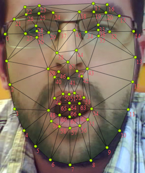

| Package | com.tastenkunst.as3.brf.nxt |
| Class | public final class BRFFaceShape |
| Inheritance | BRFFaceShape |
BRFFaceShape includes all detailed face properties and features. Eg. points, bounds etc.
See ExampleWebcamFaceEstimation_Output.jpg (below) for index access of points (eg. left eye center (index: 31) or chin (index: 7)).

When _brfManager.candideEnabled == true a Candide 3 model, its vertices and scale, translationX, translationY, rotationX, rotationY, rotationZ values, is updated as well. The candide vertices are 2D, but transformed by these transform values (scale, translation, rotation).
6 AcionsUnits for brows, mouth and jaw are also implemented (activate it by setting _brfManager.candideActionUnitsEnabled = true).
| Property | Defined By | ||
|---|---|---|---|
| bounds : Rectangle
Outline rectangle of the face shape. | BRFFaceShape | ||
| candideShapeTriangles : Vector.<int>
Used for BitmapData.drawTriangles(). | BRFFaceShape | ||
| candideShapeVertices : Vector.<Number>
Used for BitmapData.drawTriangles(). | BRFFaceShape | ||
| faceShapeTriangles : Vector.<int>
Used for BitmapData.drawTriangles(). | BRFFaceShape | ||
| faceShapeVertices : Vector.<Number>
Holds the same values as points as a one dimensional vector (x,y,x,y...). | BRFFaceShape | ||
| points : Vector.<Point>
68 points of the face shape. | BRFFaceShape | ||
| rotationX : Number
The x rotation of the model. | BRFFaceShape | ||
| rotationY : Number
The y rotation of the model. | BRFFaceShape | ||
| rotationZ : Number
The z rotation of the model. | BRFFaceShape | ||
| scale : Number
The scale of the model multiplied by 180 to match the standard face width. | BRFFaceShape | ||
| translationX : Number
The x translation of the model. | BRFFaceShape | ||
| translationY : Number
The y translation of the model. | BRFFaceShape | ||
| bounds | property |
public var bounds:RectangleOutline rectangle of the face shape. Used for easy access of x, y, width and height of the face shape.
| candideShapeTriangles | property |
public var candideShapeTriangles:Vector.<int>Used for BitmapData.drawTriangles().
| candideShapeVertices | property |
public var candideShapeVertices:Vector.<Number>Used for BitmapData.drawTriangles().
| faceShapeTriangles | property |
public var faceShapeTriangles:Vector.<int>Used for BitmapData.drawTriangles().
| faceShapeVertices | property |
public var faceShapeVertices:Vector.<Number>Holds the same values as points as a one dimensional vector (x,y,x,y...). Used for BitmapData.drawTriangles().
| points | property |
public var points:Vector.<Point>68 points of the face shape. See ExampleWebcamFaceEstimation_Output.jpg for index access.
| rotationX | property |
public var rotationX:NumberThe x rotation of the model.
| rotationY | property |
public var rotationY:NumberThe y rotation of the model.
| rotationZ | property |
public var rotationZ:NumberThe z rotation of the model.
| scale | property |
public var scale:NumberThe scale of the model multiplied by 180 to match the standard face width.
| translationX | property |
public var translationX:NumberThe x translation of the model.
| translationY | property |
public var translationY:NumberThe y translation of the model.